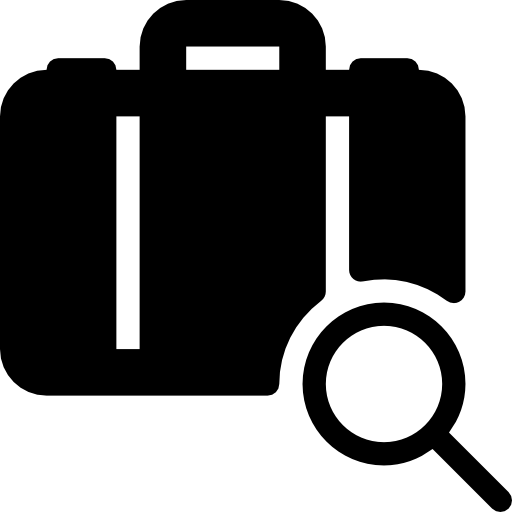

Rules for carry-on baggage
The carry-on luggage is the luggage you may carry on board the
aircraft. Be aware that there are special rules for what to bring.
Your carry-on luggage must be checked in the security check as there are special rules
for what you can bring on board the aircraft.
In order to get through the security check as quickly as possible, you should pack your
carry-on luggage optimally.
At the top of the luggage, you should put all items that require separate display during
the security check. It applies the following items:
Electrical items such as notebooks, tablets, camera and the like.
Liquids (must be gathered in a transparent and reclosable plastic bag).
You may want to bring baby food, dietary and liquid medicine in containers that
hold more than is normally allowed 100 ml (1 dl). However, you must be able
to prove the fluid's authenticity.
Missing baggage
If your luggage is missing on arrival, a report must be filed at
arrival service in the luggage area before you leave the airport.
Your airline hires a handling company to handle passengers and luggage. The staff you
meet at check-in, boarding at the gate and arrival service in the luggage claim area are
handling-company staff.
To file a report you need:
1. Your luggage receipt (the tag with a barcode and destination code you got when you
checked in your luggage). The luggage receipt shows your flight number and the
identification number of your luggage.
2. Your boarding card or itinerary.
3. A detailed description of your luggage.
If a missing luggage report has already been filed, you need to quote the reference
number of the report.
If a report has not yet been filed, you must have your luggage receipt (the tag with a
barcode and destination code you got when you checked in your luggage). The luggage
receipt shows your flight number and the identification number of your luggage.
Examples of odd-size baggage:
Odd-size baggage is special baggage, that for some reason cannot
be dropped off at the regular check-in counters or bagdrop
1.Bicycles
2.Weapons*
3.Stroller/Push-chair
4.Televisions
5.Big sports equipment like surfboards, kitesurfing-equipment etc.
6.Music instruments
7.Baggage weighing more than 32 kg.
8.Other kinds of baggage, that is too large for regular transport belts.
9.*Special rules apply for weapons in your luggage.
© Copyright 2013-2022
Prishtina airport